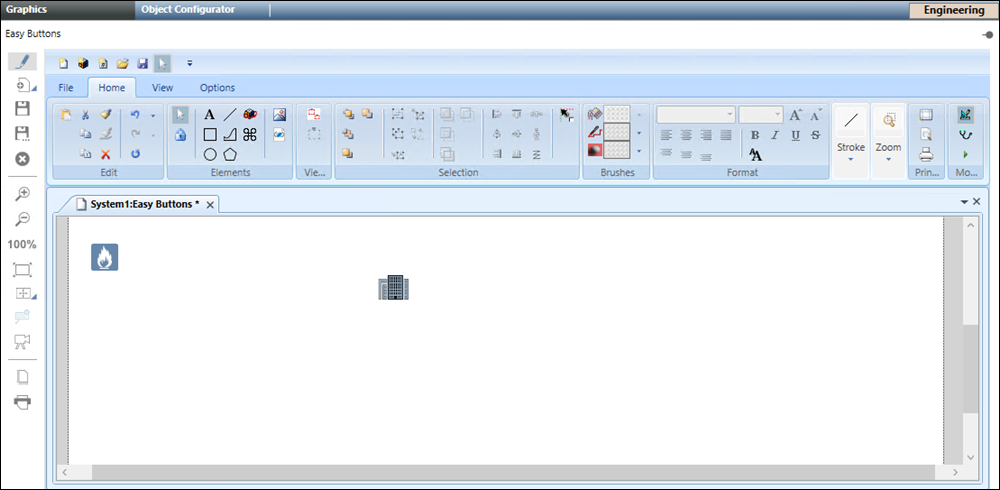

Easy Buttons Tab
Easy buttons are graphical short cuts that represent different types of emergency events for which you can quickly initiate incidents and launch notifications.
Each easy button consists of an easily configurable icon to which you can link an incident template or a notification template using Graphics.
In the Operating mode, the Easy Buttons tab displays when you select Applications > Graphics > Easy Buttons or Applications > Notification and click Edit
 .
.
It allows you to add an incident template or a notification template as an easy button by dragging the incident template or a notification template in the easy buttons editor.
Each easy button symbol represents an easy button.
Once you drag the incident template or a notification template, you can replace the existing easy button symbol with a new symbol.
If the folder symbol  is deleted, you cannot see the Easy Buttons tab. In that case, you must first restore the Easy Buttons tab (see Restoring the Easy Buttons Tab in the Additional Notification procedures.
is deleted, you cannot see the Easy Buttons tab. In that case, you must first restore the Easy Buttons tab (see Restoring the Easy Buttons Tab in the Additional Notification procedures.

Additionally you can customize the easy button background with an required image (see Customizing the Background for the Easy Button in the Additional Notification Procedures).